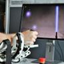

01 · Python streaming
Python streaming
Pythonlive-pytorch
import caliper
for step in range(steps):
x, y = make_batch(64, device)
loss = F.cross_entropy(model(x), y)
opt.zero_grad(set_to_none=True)
loss.backward()
opt.step()
caliper.show(model.fc1.weight, "fc1.weight", cmap="rdbu") # (64, 784) heatmap
caliper.show(acts["conv1"], "conv1.act") # (64, 8, 28, 28) -> mosaic
caliper.points(acts["hidden"] @ proj, y, "embedding", classes=4)
caliper.series(loss.detach(), "loss")
caliper.histogram(model.fc1.weight, "fc1.weight.hist")02 · Native backends
Native backends
The descriptortensor.h · 17–27
17typedef struct CaliperTensor {18 uint32_t struct_size;19 void* data; /* device or host pointer */20 CaliperDType dtype;21 int32_t ndim; /* <= 8 */22 int64_t shape[8];23 int64_t strides[8]; /* in elements */24 CaliperDeviceKind device;25 int32_t device_index;26 void* stream; /* cudaStream_t / MTLCommandQueue* / NULL */27} CaliperTensor;The call, from an appletgpt_scope.cpp · 451, 455–456, 1388
451return caliper::adapters::stream_to_tensor(dev_t, bridge.caps());⋯455if (id != 0) { bridge.update_texture(id, &*ct); return id; }456id = bridge.texture_from_tensor_mapped(&*ct, cmap, vmin, vmax, 0);⋯1388ImGui::Image(caliper::Bridge::imtex(st->head_tex), ImVec2(side, side));macOS · Metal
Unified-memory path
MPS tensor data is colormapped or blitted on the GPU before ImGui draws it.
The Metal renderer is the macOS default. The bridge validates layout and device information before using the buffer; unsupported inputs are rejected instead of reinterpreted.
Windows · Vulkan + CUDA
Device-local CUDA interop
The path remains in device-local memory, with one VRAM copy at most and no system-RAM staging.
Vulkan exports device-local memory for CUDA import. When shared timeline semaphores are available, GPU-side ordering avoids CPU synchronization on the hot path; otherwise the producer is drained before handoff.
Tensor to descriptortorch.hpp · 157–166
157if (t.is_cuda()) {158 // Unlike MPS there is no buffer-object cast: data_ptr() IS the device159 // address (storage offset already applied), and the Vulkan backend160 // copies from it in-VRAM (ZEROCOPY.md). Contiguity was enforced above;161 // views with a nonzero storage offset are therefore fine here.162 out.data = t.data_ptr();163 out.device = CALIPER_DEV_CUDA;164 out.device_index = static_cast<int32_t>(t.device().index());165 return out;166}Vulkan allocates, exportablevulkan_renderer.cpp · 2380–2388
2380VkMemoryRequirements mr;2381vkGetBufferMemoryRequirements(device_, b.buf, &mr);2382VkExportMemoryAllocateInfo xmai{VK_STRUCTURE_TYPE_EXPORT_MEMORY_ALLOCATE_INFO};2383xmai.handleTypes = VK_EXTERNAL_MEMORY_HANDLE_TYPE_OPAQUE_WIN32_BIT;2384VkMemoryAllocateInfo mai{VK_STRUCTURE_TYPE_MEMORY_ALLOCATE_INFO};2385if (external) mai.pNext = &xmai;2386mai.allocationSize = mr.size;2387if (!find_mem_type(mr.memoryTypeBits, props, &mai.memoryTypeIndex) ||2388 vkAllocateMemory(device_, &mai, nullptr, &b.memory) != VK_SUCCESS) {CUDA maps the same VRAMvulkan_renderer.cpp · 2657–2661, 2669–2673, 2677–2681
2657VkMemoryGetWin32HandleInfoKHR gi{VK_STRUCTURE_TYPE_MEMORY_GET_WIN32_HANDLE_INFO_KHR};2658gi.memory = io.shared.memory;2659gi.handleType = VK_EXTERNAL_MEMORY_HANDLE_TYPE_OPAQUE_WIN32_BIT;2660HANDLE h = nullptr;2661if (vkGetMemoryWin32HandleKHR(device_, &gi, &h) != VK_SUCCESS) {⋯2669cudadrv::ExternalMemoryHandleDesc hd{};2670hd.type = cudadrv::kExtMemHandleTypeOpaqueWin32;2671hd.handle.win32.handle = h;2672hd.size = io.shared.size;2673if (cu->cuImportExternalMemory(&io.ext, &hd) != cudadrv::CUDA_SUCCESS) {⋯2677cudadrv::ExternalMemoryBufferDesc bd{};2678bd.offset = 0;2679bd.size = io.shared.size;2680if (cu->cuExternalMemoryGetMappedBuffer(&io.cuda_ptr, io.ext, &bd) !=2681 cudadrv::CUDA_SUCCESS) {Each updatevulkan_renderer.cpp · 3422–3432, 3445–3460
3422cudadrv::CUstream stream = (cudadrv::CUstream)t.stream;3423const uint64_t base = io.timeline_value;3424if (!shared_in_place &&3425 cu->cuMemcpyDtoDAsync(io.cuda_ptr, src, (size_t)bytes, stream)3426 != cudadrv::CUDA_SUCCESS)3427 return dev_bail("pipelined: cuMemcpyDtoDAsync failed");3428cudadrv::ExternalSemaphoreSignalParams sp{};3429sp.params.fence.value = base + 1;3430if (cu->cuSignalExternalSemaphoresAsync(&io.cuda_sem, &sp, 1, stream)3431 != cudadrv::CUDA_SUCCESS)3432 return dev_bail("pipelined: semaphore signal failed");⋯3445uint64_t wait_val = base + 1, signal_val = base + 2;3446VkTimelineSemaphoreSubmitInfoKHR tsi{VK_STRUCTURE_TYPE_TIMELINE_SEMAPHORE_SUBMIT_INFO_KHR};3447tsi.waitSemaphoreValueCount = 1;3448tsi.pWaitSemaphoreValues = &wait_val;3449tsi.signalSemaphoreValueCount = 1;3450tsi.pSignalSemaphoreValues = &signal_val;3451VkSubmitInfo si{VK_STRUCTURE_TYPE_SUBMIT_INFO};3452si.pNext = &tsi;3453si.waitSemaphoreCount = 1;3454si.pWaitSemaphores = &io.timeline;3455si.pWaitDstStageMask = &wait_stage;3456si.commandBufferCount = 1;3457si.pCommandBuffers = &io.cb;3458si.signalSemaphoreCount = 1;3459si.pSignalSemaphores = &io.timeline;3460if (vkQueueSubmit(queue_, 1, &si, VK_NULL_HANDLE) != VK_SUCCESS)03 · Libraries
Libraries
- Dear ImGuiocornut/imgui

ImPlotepezent/implot- ImPlot3Dbrenocq/implot3d
- GLFWglfw/glfw
- Metaldeveloper.apple.com/metal
- VulkanKhronosGroup/Vulkan-Headers
- CUDA driver APIdocs.nvidia.com/cuda
- PyTorchpytorch/pytorch
- DLPackdmlc/dlpack
- nanobindwjakob/nanobind
- DuckDBduckdb/duckdb
- Arrow C Data Interfacearrow.apache.org
04 · Build
Build from source
CMake 3.25 or later and a C++17 compiler. macOS needs Xcode command line tools and Apple Silicon; Windows needs Visual Studio 2022 and CUDA 12.8.
- macOS
- Metal, default · MPS tensors on the GPU
- Windows
- Vulkan, default · CUDA tensors through external memory
- Fallback
- OpenGL 3.3 core · CPU-staged upload
# Initialize submodules $ git submodule update --init --recursive # Configure and build; the applets download LibTorch $ cmake --preset release $ cmake --build --preset release # Run $ ./cmake-build-release/caliper